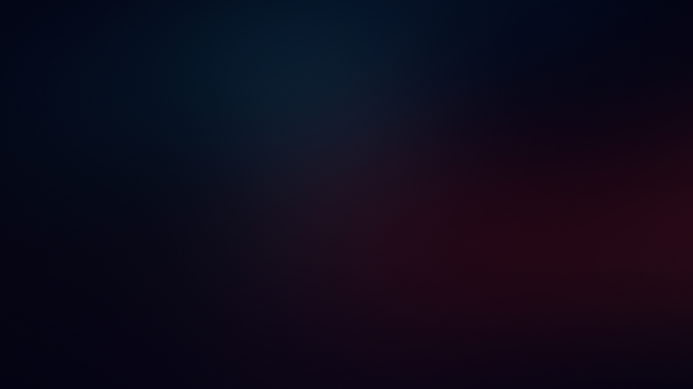

Hello, it's me JJ.
Learn about my work
About me
I'm a young enthusiastic software developer. I am currently doing an apprenticeship as a computer
scientist specializing in application development. I love working as a software developer because every
assignment is unique.
Learn more about me